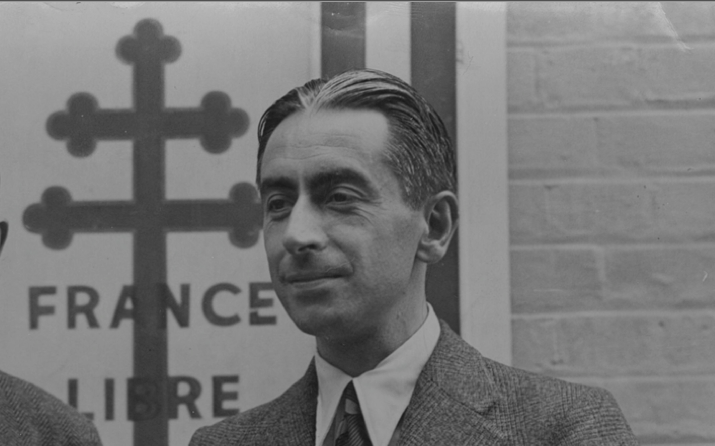

l'Avenue Pierre-Brossolette
Pierre Brossolette (1903-1944) est un journaliste et résistant. Arrêté par la Gestapo en 1944, il est torturé pendant plusieurs jours par les nazis. Il préfère se suicider plutôt que de dénoncer d’autres résistants.
